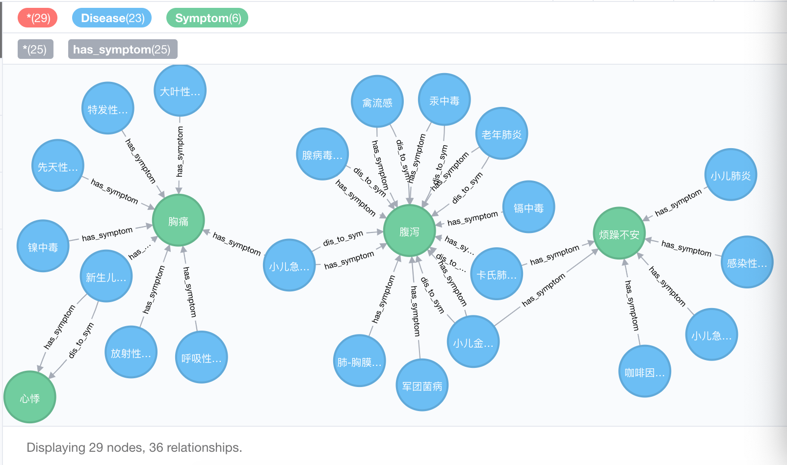
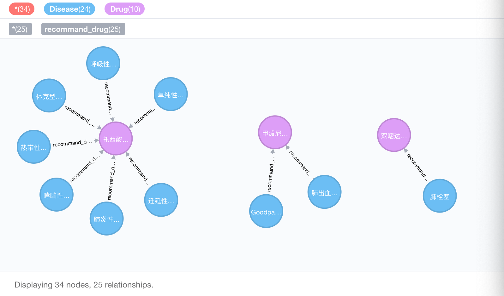
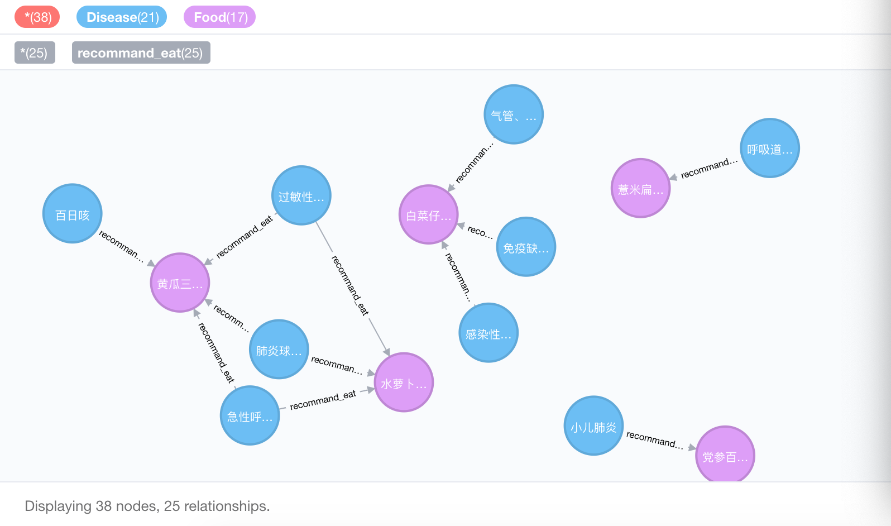

10.2 搭建红蜘蛛机器人
红蜘蛛搭建全流程
学习目标
- 理解红蜘蛛相关模块的设计思路.
- 掌握红蜘蛛机器人的代码实现.
图谱数据构建
- 红蜘蛛机器人的搭建, 首要任务就是构建知识图谱, 图谱越丰富, 内容越详实, 未来红蜘蛛能对外提供的服务就越优质.
- 总体来说, 在此选定neo4j作为项目的图数据库, 配置信息如下: /home/ec2-user/knowledge_graph/red_spider/config.py
NEO4J_CONFIG = {
"uri": "bolt://0.0.0.0:7687",
"auth": ("neo4j", "neo4j"),
"encrypted": False
}
- 构建知识图谱的代码路径: /home/ec2-user/knowledge_graph/red_spider/build_medicalgraph.py
import os
import json
from neo4j import GraphDatabase
from config import NEO4J_CONFIG
# 知识图谱主类
class MedicalGraph:
def __init__(self):
cur_dir = '/'.join(os.path.abspath(__file__).split('/')[:-1])
self.data_path = os.path.join(cur_dir, 'data/temp.json')
# 读取文件
def read_nodes(self):
# 共4类节点
drugs = [] # 药品
foods = [] # 食物
diseases = [] # 疾病
symptoms = [] # 症状
# 构建节点实体关系
rels_recommandeat = [] # 疾病-推荐吃食物关系
rels_recommanddrug = [] # 疾病-推荐药品关系
rels_symptom = [] # 疾病-症状关系
count = 0
for data in open(self.data_path):
disease_dict = {}
count += 1
if count % 10 == 0:
print('count = ', count)
# 当前V1.0版本仅支持疾病症状, 药品, 食品的相关咨询
data_json = json.loads(data)
disease = data_json['name']
diseases.append(disease)
if 'symptom' in data_json:
symptoms += data_json['symptom']
for symptom in data_json['symptom']:
rels_symptom.append([disease, symptom])
if 'recommand_drug' in data_json:
recommand_drug = data_json['recommand_drug']
drugs += recommand_drug
for drug in recommand_drug:
rels_recommanddrug.append([disease, drug])
if 'recommand_eat' in data_json:
recommand_eat = data_json['recommand_eat']
for _recommand in recommand_eat:
rels_recommandeat.append([disease, _recommand])
foods += recommand_eat
return set(drugs), set(foods), set(symptoms), set(diseases), rels_recommandeat, rels_recommanddrug, rels_symptom
# 创建知识图谱疾病相关的节点, 疾病, 症状, 药品, 食品
def create_graphnodes_and_graphrels(self):
Drugs, Foods, Symptoms, Diseases, rels_recommandeat, rels_recommanddrug, rels_symptom = self.read_nodes()
# 打印相关数据的条数
print('Drugs:', len(Drugs))
print('Foods:', len(Foods))
print('Symptoms:', len(Symptoms))
print('Diseases:', len(Diseases))
print('rels_recommandeat:', len(rels_recommandeat))
print('rels_recommanddrug:', len(rels_recommanddrug))
print('rels_symptom:', len(rels_symptom))
# 实例化图数据库驱动器对象
driver = GraphDatabase.driver( **NEO4J_CONFIG)
with driver.session() as session:
# 创建中心疾病的知识图谱节点
print('开始创建中心疾病节点......')
for d in Diseases:
cypher = "MERGE (a:Disease{name:%r}) RETURN a" % d
session.run(cypher)
# 创建"药品", "食品", "症状"的知识图谱节点, V1.0版本只提供这3种问诊信息
print('开始创建药品节点Drug......')
for n in Drugs:
cypher = "MERGE (a:Drug{name:%r}) RETURN a" % n
session.run(cypher)
print('开始创建食品节点Food......')
for n in Foods:
cypher = "MERGE (a:Food{name:%r}) RETURN a" % n
session.run(cypher)
print('开始创建症状节点Symptom......')
for n in Symptoms:
cypher = "MERGE (a:Symptom{name:%r}) RETURN a" % n
session.run(cypher)
# 创建实体关系边, V1.0版本仅支持3种关系的查询
self.create_relationship('Disease', 'Food', rels_recommandeat, 'recommand_eat', '推荐食谱')
self.create_relationship('Disease', 'Drug', rels_recommanddrug, 'recommand_drug', '推荐药品')
self.create_relationship('Disease', 'Symptom', rels_symptom, 'has_symptom', '症状')
# 创建实体关联边
def create_relationship(self, start_node, end_node, edges, rel_type, rel_name):
# 关系的去重处理
set_edges = []
for edge in edges:
set_edges.append('###'.join(edge))
num_edges = len(set(set_edges))
print('num_edges = ', num_edges)
# 实例化图数据库驱动器对象
driver = GraphDatabase.driver( **NEO4J_CONFIG)
with driver.session() as session:
for edge in set(set_edges):
edge = edge.split('###')
p = edge[0]
q = edge[1]
# 锁定节点和关系, 进行三元组的创建
cypher = "match(p:%s), (q:%s) where p.name='%s'and q.name='%s' create (p)-[rel:%s{name:'%s'}]->(q)" % (start_node, end_node, p, q, rel_type, rel_name)
try:
session.run(cypher)
except Exception as e:
print(e)
return
if __name__ == '__main__':
mg = MedicalGraph()
print('创建知识图谱中的节点和关系......')
mg.create_graphnodes_and_graphrels()
python build_medicalgraph.py
创建知识图谱中的节点和关系......
count = 10
count = 20
count = 30
count = 40
count = 50
count = 60
count = 70
count = 80
count = 90
count = 100
Drugs: 320
Foods: 283
Symptoms: 314
Diseases: 100
rels_recommandeat: 553
rels_recommanddrug: 675
rels_symptom: 748
开始创建中心疾病节点......
开始创建药品节点Drug......
开始创建食品节点Food......
开始创建症状节点Symptom......
num_edges = 553
num_edges = 675
num_edges = 748



问题分类与答案搜索
- 构建好知识图谱后, 我们要搭建一个简单的基于规则派的红蜘蛛对话机器人, 需要完成3个子功能:
问题分类子任务
- 对于用户的任意问句, 将其分类到红蜘蛛可以支持回答的若干子类中, 有利于后续查询和回答模板的编写.
- 代码路径: /home/ec2-user/knowledge_graph/red_spider/question_classifier.py
import os
import ahocorasick
class QuestionClassifier:
def __init__(self):
cur_dir = '/'.join(os.path.abspath(__file__).split('/')[:-1])
# 特征词路径
self.disease_path = os.path.join(cur_dir, 'dict/disease.txt')
self.drug_path = os.path.join(cur_dir, 'dict/drug.txt')
self.food_path = os.path.join(cur_dir, 'dict/food.txt')
self.symptom_path = os.path.join(cur_dir, 'dict/symptom.txt')
# 加载特征词
self.disease_words= [i.strip() for i in open(self.disease_path) if i.strip()]
self.drug_words= [i.strip() for i in open(self.drug_path) if i.strip()]
self.food_words= [i.strip() for i in open(self.food_path) if i.strip()]
self.symptom_words= [i.strip() for i in open(self.symptom_path) if i.strip()]
self.region_words = set(self.disease_words + self.drug_words + self.food_words + self.symptom_words)
# 构造领域actree, 可以加速关键词匹配查找
self.region_tree = self.build_actree(list(self.region_words))
# 构建词典
self.wdtype_dict = self.build_wdtype_dict()
# 问句疑问词, V1.0版本仅支持症状, 食品, 药品的查询.
self.symptom_request = ['症状', '表征', '现象', '症候', '表现']
self.food_request = ['饮食', '饮用', '吃', '食', '伙食', '膳食', '喝', '菜' ,'忌口', '补品', '保健品', '食谱', '菜谱', '食用', '食物','补品']
self.drug_request = ['药', '药品', '用药', '胶囊', '口服液', '炎片']
print('model init finished ......')
# 分类主函数
def classify(self, question):
data = {}
medical_dict = self.check_medical(question)
if not medical_dict:
return {}
data['args'] = medical_dict
# 收集问句当中所涉及到的实体类型
types = []
for type_ in medical_dict.values():
types += type_
question_type = 'others'
question_types = []
# 症状
if self.check_words(self.symptom_request, question) and ('disease' in types):
question_type = 'disease_symptom'
question_types.append(question_type)
# 推荐食品
if self.check_words(self.food_request, question) and ('disease' in types):
question_type = 'disease_food'
question_types.append(question_type)
# 推荐药品
if self.check_words(self.drug_request, question) and ('disease' in types):
question_type = 'disease_drug'
question_types.append(question_type)
# 若没有查到相关的外部查询信息，那么则将该疾病的描述信息返回
if question_types == [] and 'symptom' in types:
question_types = ['disease_symptom']
# 将多个分类结果进行合并处理，组装成一个字典
data['question_types'] = question_types
return data
# 构造关键词对应的节点类型
def build_wdtype_dict(self):
word_dict = dict()
for word in self.region_words:
word_dict[word] = []
# 检查是否有疾病关键词
if word in self.disease_words:
word_dict[word].append('disease')
# 检查是否有药品关键词
if word in self.drug_words:
word_dict[word].append('drug')
# 检查是否有食品关键词
if word in self.food_words:
word_dict[word].append('food')
# 检查是否有症状关键词
if word in self.symptom_words:
word_dict[word].append('symptom')
return word_dict
# 构造actree加速过滤
def build_actree(self, wordlist):
actree = ahocorasick.Automaton()
for index, word in enumerate(wordlist):
actree.add_word(word, (index, word))
actree.make_automaton()
return actree
# 问句检查
def check_medical(self, question):
region_words = []
# 利用AcTree加速查询关键词
for i in self.region_tree.iter(question):
word = i[1][1]
region_words.append(word)
stop_words = []
# 子词进入停用词表
for word1 in region_words:
for word2 in region_words:
if word1 in word2 and word1 != word2:
stop_words.append(word1)
final_words = [i for i in region_words if i not in stop_words]
final_dict = {i: self.wdtype_dict.get(i) for i in final_words}
return final_dict
# 基于特征词进行问句检测, 并进行问句类型的规则分类
def check_words(self, words, sent):
for word in words:
if word in sent:
return True
return False
if __name__ == '__main__':
qc = QuestionClassifier()
while True:
question = input('input an question:')
data = qc.classify(question)
print(data)
python question_classifier.py
input an question:身体发热恶心应该吃什么?
{'args': {'恶心': ['symptom']}, 'question_types': ['disease_symptom']}
input an question:Q
{}
问题解析子任务
- 对于用户的任意问句, 经过上一步骤进行分类后, 已经得到了问题的分类标签, 接下来要对症状, 食品, 药品进行neo4j查询的cypher语句组装和解析.
- 代码路径: /home/ec2-user/knowledge_graph/red_spider/question_parser.py
class QuestionPaser:
# 构建实体节点
def build_entitydict(self, args):
entity_dict = {}
for arg, types in args.items():
for type in types:
if type not in entity_dict:
entity_dict[type] = [arg]
else:
entity_dict[type].append(arg)
return entity_dict
# 解析主函数
def parser_main(self, res_classify):
args = res_classify['args']
entity_dict = self.build_entitydict(args)
question_types = res_classify['question_types']
sqls = []
for question_type in question_types:
sql_ = {}
sql_['question_type'] = question_type
sql = []
# 按照不同的分类结果, 组装不同的cypher查询语句
if question_type == 'disease_symptom':
sql = self.sql_transfer(question_type, entity_dict.get('disease'))
elif question_type == 'disease_food':
sql = self.sql_transfer(question_type, entity_dict.get('disease'))
elif question_type == 'disease_drug':
sql = self.sql_transfer(question_type, entity_dict.get('disease'))
if sql:
sql_['sql'] = sql
sqls.append(sql_)
return sqls
# 针对不同的问题，分开进行处理
def sql_transfer(self, question_type, entities):
if not entities:
return []
# 查询语句
sql = []
# 查询疾病有哪些症状
if question_type == 'disease_symptom':
sql = ["MATCH (m:Disease)-[r:has_symptom]->(n:Symptom) where m.name = '{0}' return m.name, r.name, n.name".format(i) for i in entities]
# 查询疾病建议吃的东西
elif question_type == 'disease_food':
sql = ["MATCH (m:Disease)-[r:recommand_eat]->(n:Food) where m.name = '{0}' return m.name, r.name, n.name".format(i) for i in entities]
# 查询疾病常用药品
elif question_type == 'disease_drug':
sql = ["MATCH (m:Disease)-[r:recommand_drug]->(n:Drug) where m.name = '{0}' return m.name, r.name, n.name".format(i) for i in entities]
return sql
if __name__ == '__main__':
qp = QuestionPaser()
print(qp)
python question_parser.py
<__main__.QuestionPaser object at 0x7f656f8407d0>
答案搜索子任务
- 对于任意用户的问句, 经过前面两个步骤的处理, 已经有了具体的查询计划, 当前子任务只需要完成具体的查询, 并组装回复模板即可.
- 代码路径: /home/ec2-user/knowledge_graph/red_spider/answer_search.py
import os
import json
from neo4j import GraphDatabase
from config import NEO4J_CONFIG
# 答案搜索的主类
class AnswerSearcher:
def __init__(self):
self.num_limit = 10
self.driver = GraphDatabase.driver( **NEO4J_CONFIG)
# 执行cypher查询，并返回相应结果
def search_main(self, sqls):
final_answers = []
# 开启会话
with self.driver.session() as session:
for sql_ in sqls:
question_type = sql_['question_type']
queries = sql_['sql']
answers = []
# 遍历所有的查询cypher, 依次执行, 并将结果逐个添加进列表中
for query in queries:
ress = session.run(query).data()
answers += ress
# 调用精准回复模板
final_answer = self.answer_prettify(question_type, answers)
if final_answer:
final_answers.append(final_answer)
return final_answers
# 根据对应的qustion_type, 调用相应的回复模板
def answer_prettify(self, question_type, answers):
final_answer = []
if not answers:
return ''
if question_type == 'disease_symptom':
desc = [i['n.name'] for i in answers]
subject = answers[0]['m.name']
final_answer = '{0}的症状包括:{1}'.format(subject, ';'.join(list(set(desc))[:self.num_limit]))
elif question_type == 'disease_food':
desc = [i['n.name'] for i in answers]
subject = answers[0]['m.name']
final_answer = '{0}推荐食谱包括:{1}'.format(subject, ';'.join(list(set(desc))[:self.num_limit]))
elif question_type == 'disease_drug':
desc = [i['n.name'] for i in answers]
subject = answers[0]['m.name']
final_answer = '{0}推荐的药品包括:{1}'.format(subject, ';'.join(list(set(desc))[:self.num_limit]))
return final_answer
if __name__ == '__main__':
ans = AnswerSearcher()
print(ans)
<__main__.AnswerSearcher object at 0x7fdc589a3a50>
小节总结
- 本小节完成了知识图谱的构建, 以及红蜘蛛机器人上线前的3个子任务代码.